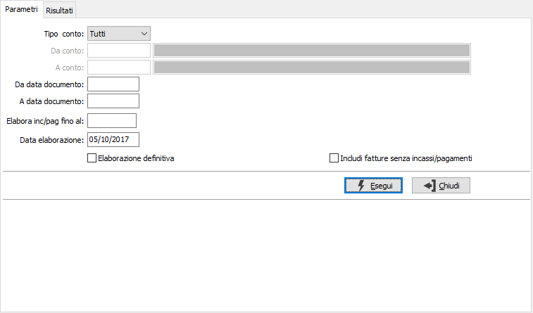
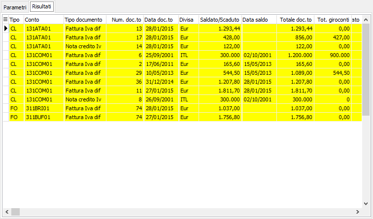

Generazione giroconti IVA per cassa
Il programma consente la generazione automatica dei giroconti per le fatture saldate nel periodo (quelle che ovviamente non hanno già generato il giroconto) e per quelle scadute ma non saldate. La procedura visualizza un elenco dei giroconti da generare effettuando una prima selezione automatica, l'utente può comunque selezionare le righe e specificare gli importi dei singoli movimenti da generare.

TIPO CONTO: Indica la tipologia dei conti utilizzati come limiti: clienti, fornitori o tutti. Se indicato Tutti non saranno richiesti i codici.
E' possibile specificare un periodo per data di documento oppure lasciare le date vuote ed il limite non sarà considerato. La data di fine elaborazione (ELABORA INC./PAG. FINO AL) è un campo obbligatorio e viene utilizzato per considerare solo gli incassi/pagamenti fino ad una certa data; anche la DATA ELABORAZIONE è obbligatoria e non può essere successiva alla data di elaborazione incassi pagamenti; entrambe le date non possono essere successive alla fine del mese relativo alla data con cui si è connessi ad OS1.
La casella ELABORAZIONE DEFINITIVA, se spuntata, consente di effettuare la generazione dei giroconti ed è attiva solo se i parametri di configurazione sono inseriti correttamente, altrimenti la procedura funzionerà solo come una semplice analisi.
La casella INCLUDI SOGGETTI ENTI PUBBLICI, se spuntato, consente di includere nell'elaborazione anche i documenti relativi ad enti pubblici (solo per la parte relativa ad incassi/pagamenti).
La casella INCLUDI FATTURE SENZA INCASSI/PAGAMENTI, se spuntata, consente di visualizzare anche le fatture per le quali non è scaduto il termine per la liquidazione "automatica" e per le quali non sono presenti incassi/pagamenti nel periodo richiesto.
La pressione del pulsante Esegui avvia l'elaborazione e porta alla pagina Risultati effettuando, dove è possibile, la selezione dei giroconti da generare. E' comunque possibile con il doppio clic del mouse, selezionare e deselezionare le righe, cliccando sulla colonna Saldato/Scaduto sarà possibile modificare l'importo dell'eventuale incasso/pagamento. Da questa pagina è disponibile anche una stampa dei dati elaborati utilizzando i bottoni Stampa ed Anteprima presenti sulla toolbar. La pressione del bottone Salva sulla toolbar, previa richiesta conferma, effettuerà le registrazioni contabili per le righe selezionate.
